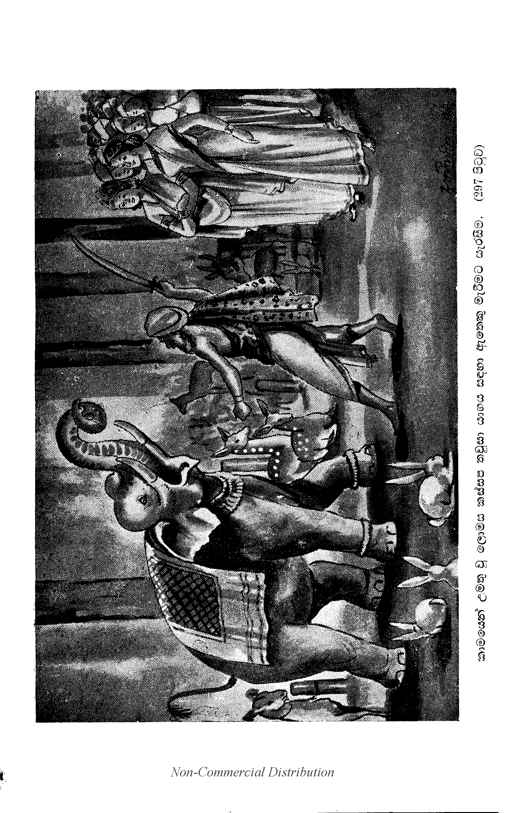

බ්රාහ්මණරාජ ප්රශ්නය
“ස්වාමීනි, නාගසෙනයන් වහන්ස, තථාගතයන් වහන්සේ විසින් ‘මහණෙනි, මම ඉල්ලූ දෙය දීමට යොග්ය වූ බාහිත කරණ ලද පාපයන් ඇති බැවින් බ්රාහ්මණ වීමි’ යි කියා මෙම කාරණය වදාරණ ලද්දේ ය. නැවත ද, ‘එම්බා සෙලයෙනි, ‘මම බිය වීමි’ යි කියාත් වදාරණ ලද්දේ ය. ඉදින් ස්වාමීනි, නාගසෙනයන් වහන්ස, භාග්යවතුන් වහන්සේ විසින් ‘අහමස්මි භික්ඛවෙ බ්රාහ්මණො යාචයොගො’ කියා වදාරණ ලද්දේ සැබෑ වී නම්, ඒ කාරණයෙන් ‘රාජාහමස්මි සෙල’ කියා වදාළ යම් වචනයක් ඇද් ද, ඒ වචනය බොරු වන්නේ ය. ඉදින් තථාගතයන් වහන්සේ විසින් ‘රාජාහමස්මි සෙල’ යි කියා වදාරණ ලද්දේ සැබෑ වී නම්, ඒ කාරණයෙන් ‘අහමස්මි භික්ඛවෙ බ්රාහ්මණො යාචයොගො’ කියා වදාළ ඒ වචනය හෝ බොරු වන්නේ ය. රජෙක් හෝ වන්නේ ය, නොහොත් බ්රාහ්මණයෙක් හෝ වන්නේ ය. උපන් එක ම ජාතියෙහි ජාති දෙකක් නම් නැත්තේ ය. (266) මේ උභතොකොටිකප්රශ්නය ද නුඹවහන්සේ කරා පැමිණියේ ය. ඒ ප්රශ්නයතෙම නුඹ වහන්සේ විසින් ඉසිලිය යුත්තේ ය” යි කීහ.
“මහරජානෙනි, අප භාග්යවතුන් වහන්සේ විසින් ‘අහමස්මි භික්ඛවෙ බ්රාහ්මණො යාචයොගො’ කියා මෙම කාරණයත් වදාරණ ලද්දේ ය. නැවත ද, ‘රාජාහමස්මි සෙල’ යි කියා සෙලබ්රාහ්මණයාහටත් වදාරණ ලද්දේ ය. යම් කාරණයකින් තථාගතයන් වහන්සේ බ්රාහ්මණ වනසේක් ද, රජ වනසේක් ද, එහි කාරණයක් ඇතැ” යි කීසේක. “ස්වාමීනි, නාගසෙනයන් වහන්ස, යම් කාරණයකින් තථාගතයන් වහන්සේ බ්රාහ්මණ වන සේක් ද, රජ වන සේක් ද, ඒ කාරණය කවරේ දැ?” යි විචාළෝ ය.
“මහරජානෙනි, සියලු පවිටු වූ අකුශලධර්ම[1] තථාගතයන් වහන්සේ විසින් බැහැර කරණ ලද්දේ ය. ප්රහීණ කරණ ලද්දේ ය, පහ කරණ ලද්දේ ය, දුරු කරණ ලද්දේ ය, මූලොච්ඡින්න කරණ ලද්දේ ය, ක්ෂය කරණ ලද්දේ ය, විනාශයට පමුණුවන ලද්දේ ය, නිරුද්ධ කරණ ලද්දේ ය, සන්හිඳුවන ලද්දේ ය. ඒ කාරණයෙන් තථාගතයන් වහන්සේ ‘බ්රාහ්මණ සේකැ’ යි කියනු ලැබෙයි. ක්ෂීණාශ්රව වූ බ්රාහ්මණතෙම නම් දුරු කරණ ලද නොයෙක් කාංක්ෂා විමතිපථයන් ඇත්තේ ය. මහරජානෙනි, භාග්යවතුන් වහන්සේ ද දුරු කරණ ලද නොයෙක් කාංක්ෂා විමතිපථයන් ඇතිසේක. ඒ කාරණයෙන් ‘තථාගතයන් වහන්සේ බ්රාහ්මණසේකැ’ යි කියන ලද්දේ ය. බ්රාහ්මණතෙම නම් සියලු ම භවගතියොනි හැරියේ ය. කෙලෙස්රජස් ගතියෙන් මිදෙමින් අසහාය වූයේ ය. මහරජානෙනි, භාග්යවතුන් වහන්සේ ද, සියලු ම භවගතියොනි හැර වදාළසේක. කෙලෙස් මල රජස්ගතියෙන් මිදුනුසේක් අසහාය වූසේක. ඒ කාරණයෙන් ‘තථාගතයන් වහන්සේ බ්රාහ්මණසේකැ’ යි කියන ලද්දේ ය. බ්රාහ්මණතෙමේ නම් අග්රශ්රෙෂ්ඨ වරප්රවර දිව්යවිහරණය බහුල කොට ඇත්තේ ය. මහරජානෙනි, භාග්යවතුන් වහන්සේ ද අග්රශ්රෙෂ්ඨවරප්රවරදිව්යවිහරණය බහුල කොට ඇතිසේක. ඒ කාරණයෙන් ද ‘භාග්යවතුන් වහ්නසේ බ්රාහ්මණ සේකැ’ යි කියන ලදී. බ්රාහ්මණතෙමේ නම් හැදෑරීම් හදාරවාලීම් දක්ෂිණා දාන පිළිගැනීම්, ඉන්ද්රියදමනය වීම්, ශීලසංවරය වීම්, ව්රත දැරීම් සංඛයාත වූ පූර්වානුශාසනාප්රවෙණිවංශයන් දරන්නේ ය මහරජානෙනි, භාග්යවතුන් වහන්සේ ද හැදෑරීම්, හදාරවාලීම්, දක්ෂිණා දාන පූජා පිළිගැනීම්, ඉන්ද්රිය දමන ශීලසංවර ධුතගුණාදි පූර්ව ජිනානුශාසනාප්රවෙණිවංශය ධරනසේක. ඒ කාරණයෙන් ද ‘තථාගතයන් වහන්සේ බ්රාහ්මණසේකැ’ යි කියන ලදී. බ්රාහ්මණතෙමේ නම් මහත් වූ සැපවිහරණ ධ්යාන සමවැදීම් ඇත්තේ ය. මහරජානෙනි, භාග්යවතුන් වහ්නසේ ද මහත් වූ සැපවිහරණ ධ්යාන සමවැදීම් ඇතිසේක. ඒ කාරණයෙන් ද ‘තථාගතයන් වහන්සේ බ්රාහ්මණසේකැ’ යි කියන ලදී. බ්රාහ්මණතෙමේ නම් මහත් වූ සැපවිහරණ ධ්යාන සමවැදීම් ඇත්තේ ය. මහරජානෙනි, භාග්යවතුන් වහන්සේ ද මහත් වූ සැපවිහරණ ධ්යාන සමවැදීම් ඇතිසේක. ඒ කාරණයෙන් ද ‘තථාගතයන් වහන්සේ බ්රාහ්මණ සේකැ’ යි කියන ලදී. බ්රාහ්මණ තෙමේ නම් සර්වභවාභවගතියෙහි විශෙෂ ජාතිවෘත්තිය හැසිරීම දන්නේ ය. මහරජානෙනි, භාග්යවතුන් වහන්සේ ද සර්වභවාභවගතියෙහි විශෙෂජාතිවෘත්තිය අනුචරිතය දැන වදාරණසේක. ඒ කාරණයෙන් ද ‘තථාගතයන් වහන්සේ ද බ්රාහ්මණසේකැ’ යි කියන ලදී. මහරජානෙනි, භාග්යවතුන් වහන්සේට ‘බ්රාහ්මණ’ ය යි කියන ලද මේ නාමය (267) මෑනියන් විසින් කරණ ලද නාමයකුත් නො වන්නේ ය. පියානන් විසින් කරණ ලද නාමයකුත් නො වන්නේ ය. භ්රාතෘකෙනෙකුන් විසින් කරණ ලද නාමයකුත් නො වන්නේ ය. නැගනි කෙනෙකුන් විසින් කරණ ලද නාමයකුත් නො වන්නේ ය. මිත්රාමාත්යකෙනෙකුන් විසින් කරණ ලද නාමයකුත් නො වන්නේ ය. නෑසිය කෙනෙකුන් විසින් කරණ ලද නාමයකුත් නො වන්නේ ය. ශ්රමණබ්රාහ්මණයන් විසින් කරණ ලද නාමයකුත් නො වන්නේ ය. දිව්යබ්රහ්මයන් විසින් කරණ ලද නාමයකුත් නො වන්නේ ය. භාග්යවත් බුදුරජානන් වහන්සේ බොධිද්රැම මූලයෙහි දී මාරසෙනාව විධමනය කොට අතීතඅනාගතප්රත්යුත්පන්න වූ සර්වපවිටු අකුශලධර්මයන් දුරු කොට සර්වඥතාඥානප්රතිලාභය හා සමග ම ලැබ වදාළසේක. යම් මේ බ්රාහ්මණ යන නාමයෙක් ඇද් ද, එය සර්වඥතාඥානය උපන් මාත්රයෙහි ම පහළ වූ ප්රත්යක්ෂ කරණ ලද නාමයෙකි. ඒ කාරණයෙන් ‘තථාගතයන් වහන්සේ බ්රාහ්මණසේකැ’ යි කියන ලදි.”
“ඒ එසේ ය, ස්වාමීනි, නාගසෙනයන් වහන්ස, කවර කාරණයකින් ‘තථාගතයන් වහන්සේ රජය’ යි කියා කියනු ලැබෙත්[2] දැ?” යි විචාළෝ ය. “මහරජානෙනි, යම් කිසි රජෙක් නම් දශධර්මයෙන් රාජ්යය කරන්නේ ය. උපායෙන් ලොකයාට අනුශාසනා කරන්නේ ය. මහරජානෙනි, අප භාග්යවතුන් වහන්සේ ද දශසහශ්රීලොකධාතුයෙහි සද්ධර්මයෙන් බුද්ධ රාජ්යශ්රී කර වදාරණසේක. කාමාවචර දෙවියන් සහිත වූ මාරයන් සහිත වූ සියලු ම බ්රහ්මරාජයන් සහිත වූ ශ්රමණ බ්රාහ්මණයන් සහිත වූ ප්රජාසංඛ්යාත සත්වලොකයාට ‘මේ නො කරව, මේ දේ කරව’ යි කියා අනුශාසනා කර වදාරණසේක. ඒ කාරණයෙන් ද ‘තථාගතයන් වහන්සේ රජ ය’ කියනු ලැබෙයි.[3]
“තව ද, මහරජානෙනි, රජ්ජුරුවෝ නම් සියලු මනුෂ්යජනයන් අභිභවනය කොට නෑසමූහයා සන්තොෂ කෙරෙමින් අමිත්රසමූහයා ශොක පත් කෙරෙමින් මහත් වූ මහායසශ්ශ්රී භාර වූ ස්ථිර වූ ක්ෂාන්ති නමැති අරටු ඡත්රදණ්ඩෙන් හෙබියා වූ ප්රවරඥාන නමැති අනූන වූ ඡත්රසලාකා සියයෙන් අලංකෘත වූ නිර්මල ශ්වෙතච්ඡත්රය උස්වා ලවන්නේ ය. මහරජානෙනි, අප භාග්යවතුන් වහන්සේ ද සියලු ම මාරසෙනාව අභිභවනය කොට දුෂ්ප්රතිපන්න පුද්ගලයන් ශොක පත් කෙරෙමින් මනා ව පිළිගන්නා වූ දිව්යබ්රහ්මමනුෂ්යයන් සන්තොෂ කෙරෙමින් දශසහශ්රී ලොකධාතුයෙහි මහත් වූ මහායසශ්ශ්රීභර වූ ස්ථිර වූ ක්ෂාන්ති නමැති අරටු ඡත්රදණ්ඩෙන් යුක්ත වූ ප්රවර වූ අනාවරණඥාන නමැති අනූන වූ ඡත්රසලාකාසියයෙන් අලංකෘත වූ අග්රප්රවර වූ අර්හත්ඵල සමාපත්ති නැමති නිර්මලධවලච්ඡත්රය නගා වදාරණසේක. ඒ කාරණයෙන් ද ‘තථාගතයන් වහන්සේ රජ ය’ යි කියනු ලැබෙයි. රජ්ජුරුවෝ නම් සමිපගත වූ සමීපයට සම්ප්රාප්ත වූ බොහෝ ජනයන් විසින් වැන්ද යුතු වන්නේ ය. මහරජානෙනි, භාග්යවතුන් වහන්සේ ද සමීපගත වූ සමීපයට සම්ප්රාප්ත වූ බොහෝ දිව්යබ්රහ්ම මනුෂ්යයන් විසින් පසඟ පිහිටුවා වැන්ද යුතු වන්නේ ය. ඒ කාරණයෙන් ද, ‘තථාගතයන් වහන්සේ රජ ය’ කියනු ලැබෙත්.
රජ්ජුරුවෝ නම් යම් කිසි සිත් සේ කටයුතු කරණ ආරාධකයෙක්හට පැහැද චාරිත්රානුකූල වූ වර දෙමින් (268) පඤ්චකාමයෙන් සන්තොෂය කරන්නේ ය. මහරජානෙනි, අප භාග්යවතුන් වහන්සේ ද කයින් වචසින් මනසින් සම්යක් ප්රතිපත්තිය කිරීමෙන් ආරාධක වූ යම්කිසිවක්හට පැහැද

අනුත්තර චරිතවර වූ සර්වසංසාරදුඃඛයාගේ මිදීම දෙමින් අශෙෂකාමාවචරයෙන් ද තර්පණය කර වදාරණසේක. ඒ කාරණයෙන් ද ‘තථාගතයන් වහන්සේ රජ ය’ යි කියන ලද්දේ ය. පෘථිවිතලතිලක වූ රජ්ජුරුවෝ නම් රාජාඥාව ඉක්මවන්නාහට නින්දා කරන්නාහු ය, දණ්ඩදානය කරන්නාහු ය, නසන්නාහු ය. මහරජානෙනි, අප භාග්යවතුන් වහන්සේගේ නිර්මලතර ශාසනවරයෙහි ද දැන දැන ආපත්තියට පැමිණෙන්නා වූ පැමිණි විට ද බොරුවෙන් සඟවන්නා වූ සතර අගතියට යන්නා වූ අලජ්ජියා බුද්ධාඥාව ඉක්මවමින් නිස්තෙජස්භාවයෙන් ලාමක වෙමින් නින්දාවෙමින් ගර්හිත වෙමින් සර්වඥසාසනවරයෙන් පහ වන්නේ ය. ඒ කාරණයෙන් ද තථාගතයන් වහන්සේ බුදුරජ ය යි කියනු ලැබෙයි.
“මහරජානෙනි, ලොකපාලරජදරුවෝ නම් මහාසම්මතාදි පූර්ව වූ ධර්මිෂ්ඨ වූ රජදරුවන්ගේ ප්රවෙණි වූ අනුශාසනාවෙන් ධර්මානුධර්ම දෙක නො හැර ම දක්වා දශධර්මයෙන් රාජ්යය කෙරෙමින් ජනහෘෂ්ට වන්නෝ ය, ප්රිය වන්නෝ ය, ප්රාර්ථනීය වන්නෝ ය, සියලු ම මනුෂ්ය ජනයන්ගේ රාජකුශලවංශය රාජධර්මගුණබලයෙන් බොහෝ කාලයක් පිහිටුවා ලවන්නෝ ය. මහරජානෙනි, අප භාග්යවතුන් වහන්සේ ද ස්වයම්භූත වූ දීපංකරාදි පූර්වබුදුවරයන් වහන්සේලාගේ ප්රවෙණි වූ සර්වඥ අනුශාසනාවෙන් ධර්මානුධර්ම දෙක නො හැර ම දක්වා සද්ධර්මයෙන් ලොකය අනුශාසනා කර වදාරණසේක් දිව්යබ්රහ්මමනුෂ්යයන්ට සන්තොෂ වනසේක. ප්රිය වනසේක. ප්රාර්ථනීය වනසේක. සර්වඥශාසනය ධර්ම ගුණබලයෙන් බොහෝ කාලයක් පවත්වා වදාරණසේක. ඒ කාරණයෙන් ද තථාගතයන් වහන්සේ බුදුරජ ය යි කියනු ලැබෙයි. මහරජානෙනි, තථාගතයන් වහන්සේ යම් කාරණයකින් බ්රාහ්මණ ද රජ ද වනසේක් ද මෙසේ (එබඳු) අනෙකවිධ වූ කාරණ ඇත්තේ ය. මහරජානෙනි, අපටත් වඩා අතිසමර්ථ වූ භික්ෂුනමක් කල්පයක් මුළුල්ලෙහිත් සම්පාදනය කොට කියන්නේ වී නමුත් නිමාවට නො යන්නේ ය. එහෙයින් ඉතා බොහෝ කොට කීමෙන් කම් කිම් ද? සංක්ෂෙපයෙන් පිළිගත යුත්තේ ය” යි වදාළසේක. “සාධු, සාධු, ස්වාමීනි, නාගසෙනයන් වහන්ස, මෙසේ මේ ප්රශ්නය එසේ ම පිළිගන්නෙමි” යි කීහ.
බ්රාහ්මණරාජප්රශ්නය නිමි.